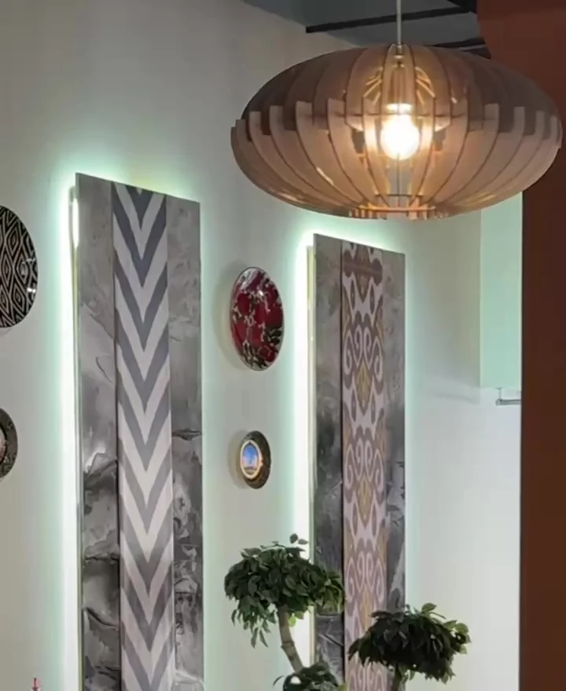
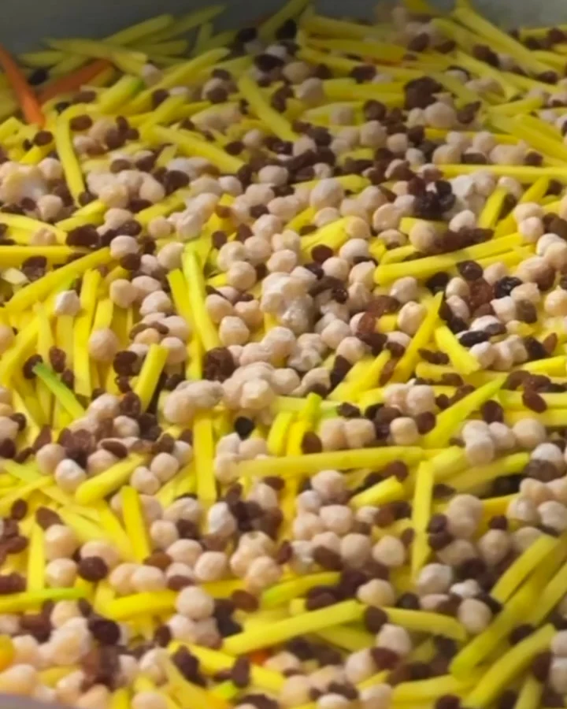

✧ ЧАЙХАНА «ДОНИ ШЕФ» · УФА
Восток
на вкус.
Самаркандский плов, сочный шашлык
и тёплые встречи за одним столом.


02 / НАША ЧАЙХАНА
Хорошо там,
где ждут к столу.
Восточная кухня и гостеприимство
в самом центре Уфы.
В «ДониШеф» готовят самаркандский плов, шашлыки и другие блюда восточной кухни. Здесь встречаются с близкими, обедают и собираются за горячим чаем.
Заглядывайте на Ленина, 30.
А если хочется остаться дома — закажите доставку.
03 / ДОСТАВКА
Накроем стол.
Даже у вас дома.
Любимые блюда «ДониШеф» можно заказать
с доставкой. Позвоните — и выберите своё.
Стоимость, время и зону доставки уточняйте при заказе.
ОТЗЫВЫ ГОСТЕЙ
Гости о нас.
Короткие фрагменты отзывов
о чайхане на Ленина, 30.
Бываем здесь нередко, всегда очень вкусно!
Вкусный лёгкий плов, быстрое обслуживание, вежливый персонал.
Очень понравился плов.
04 / ЖДЁМ В ГОСТИ
Встретимся
на Ленина, 30.
Приходите за вкусом Востока.
Семьёй, с друзьями или просто на обед.